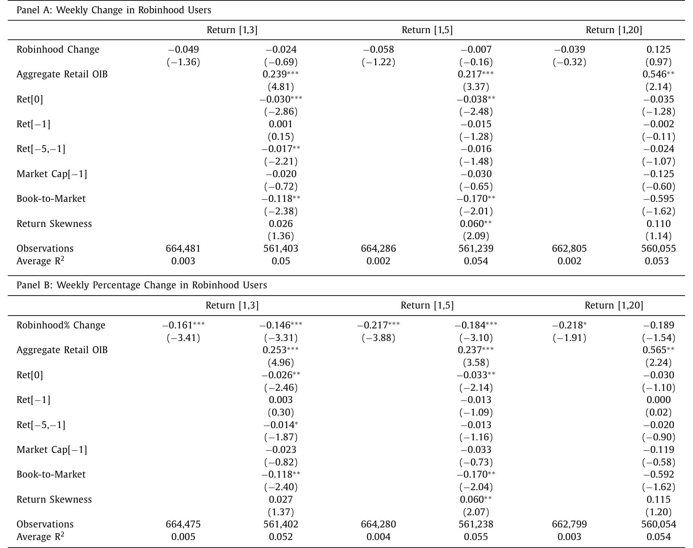
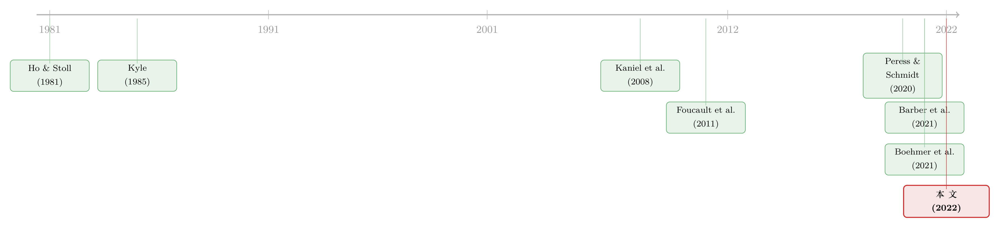

当散户「掉线」：一次宕机，照出两种截然不同的散户
本文读的是 Eaton, Green, Roseman & Wu (2022, Journal of Financial Economics)：作者用券商平台「宕机」当作对散户参与度的负向冲击，发现 Robinhood（迎合新手、爱追涨杀跌、爱抱团）一掉线，那些散户最扎堆的股票反而 价差收窄、波动下降、买卖更平衡；而传统券商（TD Ameritrade、嘉信、E-Trade）一掉线，结果恰好相反。一句话：散户不是铁板一块，「散户到底是噪声还是润滑剂」这个老问题的答案，取决于他们是逆向交易还是抱团追涨。
1 一个被吵翻了天的老问题
散户投资者，到底是市场的「润滑剂」，还是市场的「捣乱者」？
这是一个被吵了几十年、却始终没有定论的问题。一派人说，散户是天然的「噪声交易者（noise trader）」，他们的随机买卖恰好稀释了知情交易者的信息优势，给做市商提供了流动性——按这个逻辑，散户越多，市场越润滑。Kaniel, Saar and Titman (2008) 甚至发现，散户的订单流是 逆向（contrarian） 的，而且能正向预测未来的短期收益，这被解读成散户在「低买高卖」、在为市场提供流动性。
可另一派人摆出了完全相反的证据。Foucault, Sraer and Thesmar (2011) 研究了一项专门打击散户投机的法国监管改革，发现散户被赶走之后，市场质量反而 变好 了。而 Peress and Schmidt (2020) 用「分散注意力的电视新闻」当工具变量，发现散户一旦被电视吸引走、不交易了，市场流动性反而 变差。
同一个问题，两套截然相反的实证证据。Foucault 说散户走了市场更好，Peress-Schmidt 说散户走了市场更差。如果两边的数据都没错，那一定是哪里的前提出了问题。
问题出在哪？本文的切入点很锋利：以往的研究，几乎都把「散户」当成一个同质的整体来看。 但散户和散户之间，差别可能比散户和机构之间还大。
2 把散户拆开：Robinhood 这群人不太一样
故事的真正主角，是 Robinhood。
这家以零佣金、零账户门槛、游戏化界面著称的券商，在 2020 年已经有 1300 万账户，多数是 第一次进场 的投资者。它的平均用户 31 岁、账户余额在 1000–5000 美元之间——而 1990 年代被反复研究的那批美国散户，平均 50 岁、账户余额 47,000 美元（Barber and Odean, 2001）。更夸张的是，按单位账户金额算，Robinhood 用户的换手是 E-Trade 客户的 9 倍、嘉信客户的 40 倍（Popper, 2020）。
这是理解全文的钥匙：Robinhood 的散户，是「散户里的散户」——更年轻、更没经验、更频繁交易、更容易被社交媒体和「人气榜」点燃而 抱团（herding）。
作者首先用一组事实把这种「异质性」钉死。他们用 Robintrack（一个通过 Robinhood API 抓取每只股票持有人数的独立网站）的数据，构造 Robinhood 的「持有人广度（breadth of ownership）」，再用 Boehmer et al. (2021)（业内简称 BJZZ）的方法，从 TAQ 里识别 全体散户 的订单流。两相对照，结论很干净：
- 全体散户订单流是 逆向、能正向预测收益 的（复现了 Kaniel et al. 和 Boehmer et al. 的经典结论）；
- 但 Robinhood 持有人广度的变化 并不 正向预测未来收益；
- Robinhood 投资者更爱买最近在 Reddit「WallStreetBets」论坛被热议的股票，呈现明显的 动量（momentum）/ 追涨 特征；
- 控制了滞后收益后，全体散户的订单失衡甚至与 Robinhood 持有人广度的变化 负相关。

Table 2: is that changes in Robinhood ownership do not
换句话说：当我们说「散户是逆向的、提供流动性的」，说的其实是 加总后的全体散户；而 Robinhood 这一群，方向恰恰反过来——他们是顺势抱团、demanding liquidity 的那一拨。
接着，一个自然的问题是：既然这两群人方向相反，那当其中一群「突然消失」时，市场会朝哪个方向动？这正是本文识别策略的精妙所在。
3 识别策略：用「宕机」做一次自然实验
要回答「散户对市场质量的因果影响」，最大的麻烦是 内生性：散户在某只股票上交易得多，往往是因为这只股票本身出了大新闻、波动大、流动性也在变——你根本分不清是散户影响了市场，还是市场吸引了散户。
本文的解法是 券商平台宕机（brokerage outage）：当 Robinhood 的 App 崩了、用户登不进去、下不了单，这就相当于对「这家券商的散户参与度」打了一记 负向冲击，而且这记冲击大概率与个股基本面无关。
作者从 DownDetector.com（一个汇总用户故障投诉的网站）上，筛出 2019 年 1 月到 2021 年 6 月间、至少 200 名用户报告故障的 96 次宕机事件——其中 37 次发生在 Robinhood，59 次发生在传统券商。宕机的中位时长是 30 分钟。他们刻意剔除了由熔断、涨跌停交易暂停这类「市场层面波动」引发的宕机（比如 2020 年 3 月、2021 年 1 月的若干次），以及 Robinhood 与其他券商重叠的宕机。
识别的核心是一个 双重差分（difference-in-differences, DiD）型 设计，但它有两层「差分」：
第一层（时间）：把宕机期间的市场质量，与 前一周同一时段 做对比； 第二层（横截面）：把「预期散户交易最密集」的 最高五分位（top quintile） 股票，与 底部四个五分位 做对比。
为什么要做第二层？因为宕机若真是市场层面的冲击，它会无差别地影响所有股票；而如果效应真的来自散户，那它应该 集中在散户最扎堆的股票上。回归里同时放了 公司固定效应 和 日期固定效应，正是为了把「这只股票天生流动性差」和「这一天大盘有事」这两类干扰吸收掉。
这个设计的漂亮之处在于：它不需要散户「随机分布」，只需要 宕机的时点 与个股的市场状况无关。底部四分位股票在此扮演了「控制组」——若宕机是广义坏消息，它们也该动；而事实是它们几乎不动。
4 市场质量怎么量？三把尺子
在看结果之前，先交代作者怎么从高频的 TAQ 数据里量「市场质量」。这几把尺子是后文所有反转的载体，值得照原文写清楚。
有效价差（effective spread），衡量一次往返交易的实际成本，第 \(k\) 笔交易定义为
$$2 \times |\ln(P_k) - \ln(M_k)|$$
其中 \(P_k\) 是成交价，\(M_k\) 是成交时的报价中点。
价格冲击（price impact），衡量一笔交易把价格推动了多少，定义为成交时中点到成交后五分钟中点的变化：
$$2 \times |\ln(M_{k+5\min}) - \ln(M_k)|$$
而要捕捉做市商的 库存压力（inventory risk），作者用了一个很细的 深度失衡（depth imbalance） 指标。它衡量限价订单簿上、买卖两侧的深度加权报价相对中点是否对称：
$$\frac{|(P_{t,DW,O} - M_t) - (M_t - P_{t,DW,B})|}{M_t}$$
这里 \(P_{t,DW,O}\) 与 \(P_{t,DW,B}\) 分别是 \(t\) 时刻卖方（offer）和买方（bid）的 深度加权（depth-weighted, DW） 限价价格，\(M_t\) 是报价中点。直觉上，当散户都涌到同一边下单（比如都在追买），订单簿就会一边倒，这个指标就会变大——做市商不得不单边吃进库存，承担风险。
抓住「深度失衡」这把尺子，就抓住了全文的机制：抱团 → 单边订单 → 做市商库存风险 → 价差与波动。Robinhood 散户的危害，正是经由「库存风险」这条暗线传导的，呼应了 Ho and Stoll (1981) 与 Kyle (1985) 的经典库存/噪声交易框架。
5 反转：同样是「掉线」，方向却相反
现在把所有零件拼起来。结果是本文最有冲击力的部分——两类券商的宕机，把市场推向了相反的方向。
先看交易量。 不论哪家券商宕机，散户密集的股票成交量都下降，这验证了「宕机确实掐断了散户交易」这个前提：Robinhood 宕机让高 Robinhood 交易股票的成交量降低约 3.2%，传统券商宕机让高散户交易股票成交量降低约 2.6%。到这一步，两类宕机看起来还是「一样的」。
但真正关键的一步，是市场失衡和流动性。 这里方向劈成了两半：
- Robinhood 宕机 → 散户最爱的股票，交易失衡和深度加权报价失衡 下降，买卖更平衡；
- 传统券商宕机 → 高散户股票的失衡反而 上升。
于是反转出现了。在 流动性 上：
- Robinhood 宕机时，最高五分位股票的 报价价差（quoted spread）降低
0.72个基点——相对于16.8个基点的均值，是个可观的改善； - 传统券商宕机时，高散户股票的报价价差反而 上升
0.38个基点。
在 波动率 上（用五分钟窗口内成交价变动的标准差衡量）：
- Robinhood 宕机让其偏爱股票的成交价波动 下降
0.25个基点（均值12.5个基点）； - 传统券商宕机让高散户股票波动 上升
2.96%。
把这几组数字并排放，结论就立住了：Robinhood 散户走了，市场反而更好；传统散户走了，市场反而更糟。 前者印证了 DeLong et al. (1990) 那一类「噪声交易制造波动」的模型，后者印证了 Kaniel et al. (2008) 那一类「散户提供流动性」的证据。两套看似矛盾的文献，在「散户异质性」这一刀之下，被同时收编了。
6 把链条钉到底：批发商、PFOF 与「有毒」的订单流
讲到这里，一个更深的问题浮上来：散户的订单根本不在公开交易所成交，而是被 批发商（wholesaler）、也就是那些做 订单流付费（payment for order flow, PFOF） 的高频交易（HFT）公司在场外内部化掉的。那散户怎么会影响 公开市场（lit market） 的价差呢？
作者的回答是：因为 Citadel Securities、Virtu 这些既是 Robinhood 的批发商、又是公开市场上最大的做市商。它们两个部门之间虽有信息墙（FINRA 5320 禁止抢跑客户订单），但 整个公司的总仓位和风险偏好 会同时左右两边的算法。于是作者去看 Nasdaq TotalView ITCH 里、按 MPID 标注出的 非匿名做市商报价：
- 对最高五分位的散户股票，Robinhood 关联的 HFT（Citadel、Virtu） 在宕机时报出 显著更窄 的价差；
- 其他做市商的报价没有显著变化。
这说明：平时 Robinhood 散户抱团下单，给这些关联批发商堆出了库存风险，逼得它们在公开市场上把价差报宽；一旦散户「掉线」，库存压力解除，它们立刻把价差收窄。链条就此闭合。
还有一个漂亮的副产品：既然 Robinhood 的订单流会制造库存风险，批发商为什么还抢着 付钱 买它？作者用 SEC Rule 605 的已实现价差（realized spread）数据回答——在最「有毒（toxic）」的股票上，已实现价差确实可能 为负，但批发商承诺「全量服务」，靠剩下那些无毒订单流整体仍然盈利；而且「有毒」只是 暂时 的，吃下短期亏损是为了锁定这只股票未来的可盈利订单流。
7 这不是巧合吗？——稳健性与对识别的拷问
一个聪明的读者立刻会反问：会不会是极端行情先引发了宕机，再同时搅动了市场？ 那因果就反过来了。
作者准备了好几道防线：
- 伪宕机检验（pseudo outage）：假装宕机发生在真实事件的 一小时后，结果对交易和流动性 没有任何冲击——说明效应紧贴着真实宕机的时点，不是大盘新闻在作祟。
- 剔除 WallStreetBets：把宕机当天在 WSB 上被高频提及的股票剔掉（这些可能是「先有热度、热度撑爆了服务器」），结果依旧成立。
- 事件时间图：Intraday event-time 显示，市场效应 精确发生在宕机的那段时间窗口内，前后都平静。
- 平行趋势 / 安慰剂：在底部四个五分位股票上，宕机几乎看不到任何影响。
作者也很诚实地承认：他们 不能完全排除 「交易活动激增导致宕机」这种可能，而且 Robinhood 平台可能本就比传统券商更脆弱、更容易被交易冲击搞崩。但即便如此，文章的结论依然有价值——它揭示的是，在 市场承压、流动性最金贵的时刻，不同类型的散户分别如何影响市场质量。
我认为这里仍留有一个未被完全堵死的口子：Robinhood 与传统券商的「客户构成」和「平台脆弱性」是同时不同的。作者用「Robinhood 宕机→更平衡、传统券商宕机→更失衡」这个 方向性反差 来论证「这更像抱团差异，而非券商激励差异」，逻辑上站得住，但严格来说，「平台稳健性的差异」是否会与「客户行为的差异」纠缠在一起，仍是一个值得追问的点。
8 文献脉络
把这篇论文放回它生长的那条藤蔓上，脉络就清晰了。
最上游是 市场微观结构 的两块理论基石：Ho and Stoll (1981) 的 做市商库存模型，告诉我们单边订单会逼出库存成本；Kyle (1985) 和 Glosten and Milgrom (1985) 的 噪声交易/信息模型，告诉我们随机的散户交易能稀释信息不对称、润滑市场。这两条线，恰好对应了散户「有害」与「有益」的两副面孔。

接着是 散户实证 的两军对垒：Kaniel, Saar and Titman (2008) 发现散户逆向且能预测收益，Boehmer et al. (2021) 给出了从 TAQ 识别散户订单流的标准方法，二者偏向「散户有益」；而 Foucault, Sraer and Thesmar (2011) 与 Peress and Schmidt (2020) 则在「散户走了市场会变好还是变坏」上得出相反结论。
然后，Robinhood 时代来了。Barber et al. (2021) 发现 Robinhood 投资者会被「注意力」诱发抱团，伴随大幅价格波动与随后反转；van der Beck and Jaunin (2021) 在 Koijen and Yogo (2019) 的需求体系框架上，论证 Robinhood 投资者因机构需求的非弹性而对股价有「超额」影响；Ozik et al. (2021) 则用居家隔离令的错位实施，论证 Robinhood 散户「拉平了流动性曲线」。
本文所处的位置，正是这条藤蔓的一个关键结点：它不去争论「散户平均而言是好是坏」，而是用宕机这把手术刀，把散户 按 sophistication 切开，从而 同时解释 了上游那两套矛盾的证据。
9 评论与延伸（Q&A + 研究方向）
(a) 几个可能的疑问
Q：宕机只有 30 分钟，这么短的冲击，凭什么能说明散户的长期作用？
它说明不了「长期」，但这恰恰是本文的取舍。短时、外生、可定位到分钟的冲击，换来的是干净的 因果识别；代价是只能讲「intraday」的故事。作者也明确把结论限定在「市场承压、流动性高度被珍视的时刻」，没有越界去谈长期定价。
Q：Robinhood 散户和传统券商散户方向相反，会不会只是因为两家券商的「制度激励」不同，而非客户本身不同？
这是最该担心的混淆。作者的反驳是：样本期内所有券商都零佣金、都有 PFOF 安排，制度大体可比；更重要的是，「Robinhood 宕机→交易与报价更平衡，传统券商宕机→更失衡」这个 方向性反转，更符合「低 sophistication 投资者抱团→库存成本上升」，而不太符合「不同券商提供流动性的激励不同」。
Q：用 Robintrack 的「持有人广度」当散户参与度的代理，靠谱吗？
它是持有人 数量 的快照（约每小时更新），不是真实的逐笔订单流，所以更像「关注度/参与度」而非「交易方向」。但好处是它专属于 Robinhood，能把这群人从全体散户里 干净地剥离 出来；而全体散户则用 BJZZ 方法独立度量。两套数据互为印证，是本文识别异质性的关键。
Q：报价价差只降了 0.72 个基点，这点改善有经济意义吗？
相对于 16.8 个基点的均值，0.72 个基点约是 4% 的改善——单看不大，但请记住这是「一家券商、半小时宕机」带来的边际效应。它度量的是 单一散户群体的边际贡献，而非散户的全部影响，因此这个量级反而是合理且可信的。
Q：这篇文章到底「调和」了什么？
它调和了 Foucault et al. (2011)（散户走了市场更好）和 Peress-Schmidt (2020)（散户走了市场更差）的矛盾：前者度量到的「散户」更接近抱团型的不成熟投资者，后者度量到的更接近逆向型的成熟散户。不是谁错了，而是大家说的「散户」不是同一群人。
Q：为什么效应只集中在「高散户兴趣」股票上，而不是全市场？
因为只有在散户扎堆的股票里，散户的边际进退才足以撼动做市商的库存与报价；在散户占比极低的股票里，宕机这点冲击会被淹没。底部四分位股票几乎不动，恰好是识别有效的「安慰剂」证据。
(b) 几个可能的研究问题与提案
1. 把这套「宕机识别」搬到公司债市场
【经济故事】公司债越来越多地通过零售化的电子平台（如券商的债券页面、ETF 申赎）触达个人。如果某个零售债券交易入口宕机，是否也会改变高散户持有债券的买卖价差与做市商库存？这能检验「散户异质性」是否是股票市场特有，还是在流动性更差的信用市场里被放大。 【可行性】中。难点在于公司债缺乏 TAQ 这样的高频、可识别散户的订单数据；需依赖 TRACE 加上某个零售平台的宕机记录，识别能成立但数据获取是真正的瓶颈。
2. 外资持有人的「掉线」实验
【经济故事】外资在某些市场（如新兴市场、或美国公司债）的参与高度依赖跨境通道/平台。若某条跨境交易通道临时中断，是否会像 Robinhood 宕机一样，揭示外资究竟是「稳定器」还是「波动源」？这与我之前关心的外资与公司债流动性问题直接相关。 【可行性】中偏低。通道中断事件稀少且常与汇率/资本管制冲击同时发生，外生性难保证；需要非常干净的、与本地基本面无关的技术性中断事件。
3. PFOF 批发商的「库存溢出」能否被直接观测
【经济故事】本文用非匿名 MPID 报价 间接 推断了 Citadel/Virtu 的库存压力如何溢出到公开市场。若能拿到批发商更细的内部化成交与净头寸数据，就能直接量化「散户抱团 → 批发商库存 → 公开市场价差」这条链路的弹性。 【可行性】低。批发商内部头寸数据几乎不可得；只能退而求其次，用 Rule 605/606 披露 + ITCH 报价做更精细的推断。
4. 把「sophistication」做成连续谱而非二分
【经济故事】本文是 Robinhood vs 传统券商的二分。但 sophistication 其实是连续的——能否用账户层面的交易行为（持仓集中度、追涨频率、对 WSB 的响应度）构造一个连续的「抱团倾向」指数，再看它与个股市场质量的关系？ 【可行性】中。需要账户级数据（如某券商或经纪商的脱敏样本），识别上可沿用本文的高/低分组思路；数据可得性是关键约束。
关于「散户宕机」这一识别策略本身在 期权市场 的应用，可参见《当波动率曲面被「散户」推歪：从券商宕机里读出的需求压力》；关于散户「去了哪里交易」的栖息地视角，可参见《散户的栖息地：他们不是更笨，只是去了别人不愿去的地方》与《集中，到底是谁的福利？——一张散户订单的旅行账单》。
10 我的判断
贡献：这篇文章最大的价值，不在于又发现了一个「散户有害」或「散户有益」的结论，而在于它用一个极其干净的自然实验，给一场争论了几十年的辩论换了个问法——别再问「散户好不好」，要问「哪一种散户、在做哪一种交易」。把「散户异质性 + 抱团 + 库存风险」这条机制链一路钉到批发商的报价上，证据链的完整度在同类经验研究里是少见的。宕机作为冲击的「外生性 + 可定位到分钟 + 双向对照（两类券商方向相反）」，构成了一个相当有说服力的识别组合。
对识别的担忧：我最大的保留仍是 Robinhood 与传统券商在 平台脆弱性 上的系统性差异，与 客户行为差异 之间难以完全分离——「Robinhood 更容易因为交易激增而崩」本身可能携带信息。作者用方向性反差做了很好的辩护，但这道口子没有被彻底焊死。其次，伪宕机和剔除 WSB 的稳健性都很到位，但 30 分钟窗口意味着结论严格限定在 intraday、且仅限高散户兴趣股票，外推要谨慎。
后续想看到的：我最想看到的是把这套逻辑搬到 流动性更差、做市商库存约束更紧 的市场——尤其是公司债。如果在那里也能看到「不成熟散户抱团 → 做市商库存风险 → 价差走阔」的同一条链，这篇文章的机制就从「股票市场的一个现象」升格为「一条普适的微观结构规律」。
参考文献
- Barber, B., Huang, X., Odean, T., Schwarz, C., 2021. Attention induced trading and returns: evidence from Robinhood users. Journal of Finance, forthcoming.
- Barber, B., Odean, T., 2001. Boys will be boys: gender, overconfidence, and common stock investment. Quarterly Journal of Economics 116, 261–292.
- Boehmer, E., Jones, C., Zhang, X., Zhang, X., 2021. Tracking retail investor activity. Journal of Finance 76, 2249–2305.
- Foucault, T., Sraer, D., Thesmar, D., 2011. Individual investors and volatility. Journal of Finance 66, 1369–1406.
- Glosten, L., Milgrom, P.R., 1985. Bid, ask and transaction prices in a specialist market with heterogeneously informed traders. Journal of Financial Economics 14, 71–100.
- Ho, T., Stoll, H., 1981. Optimal dealer pricing under transactions and return uncertainty. Journal of Financial Economics 9, 47–73.
- Kaniel, R., Saar, G., Titman, S., 2008. Individual investor sentiment and stock returns. Journal of Finance 63, 273–310.
- Koijen, R., Yogo, M., 2019. A demand system approach to asset pricing. Journal of Political Economy 127, 1475–1515.
- Kyle, A.S., 1985. Continuous auctions and insider trading. Econometrica 53, 1315–1335.
- Ozik, G., Sadka, R., Shen, S., 2021. Flattening the illiquidity curve: retail trading during the COVID-19 lockdown. Journal of Financial and Quantitative Analysis, forthcoming.
- Peress, J., Schmidt, D., 2020. Glued to the TV: distracted noise traders and stock market liquidity. Journal of Finance 75, 1083–1133.
- van der Beck, P., Jaunin, C., 2021. The equity market implications of the retail investment boom. Working Paper, University of Lausanne.